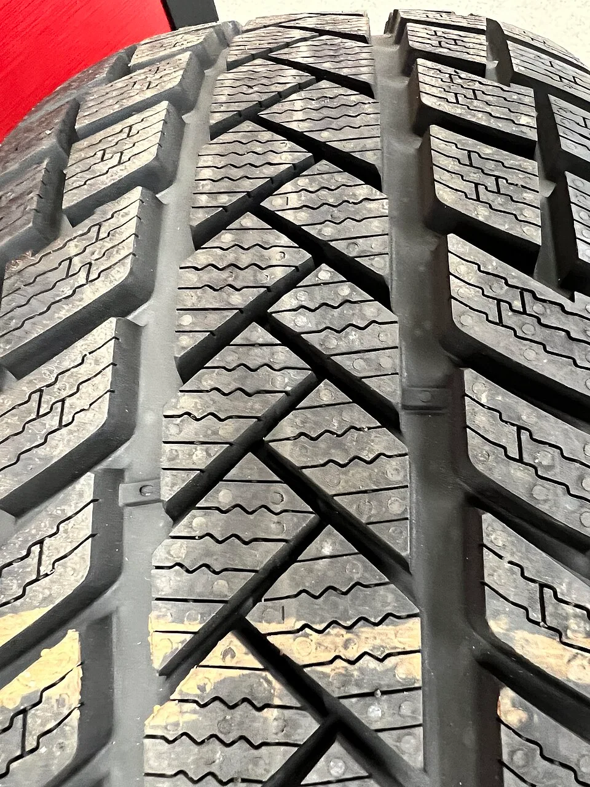
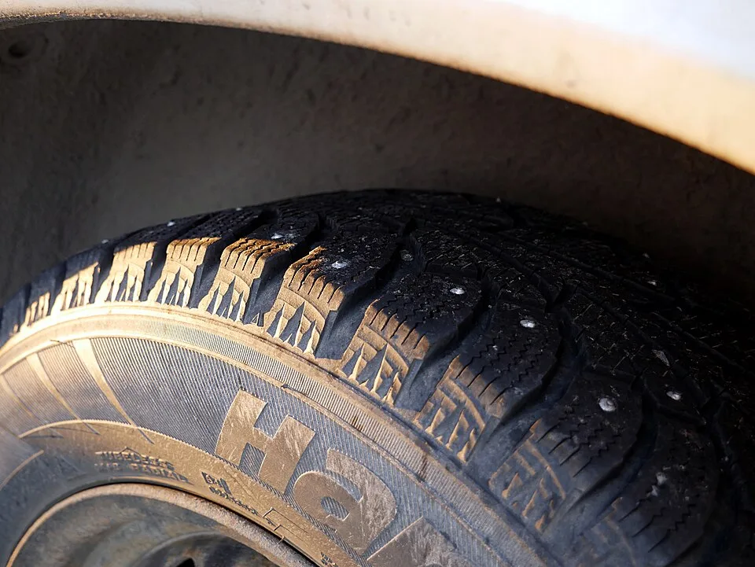
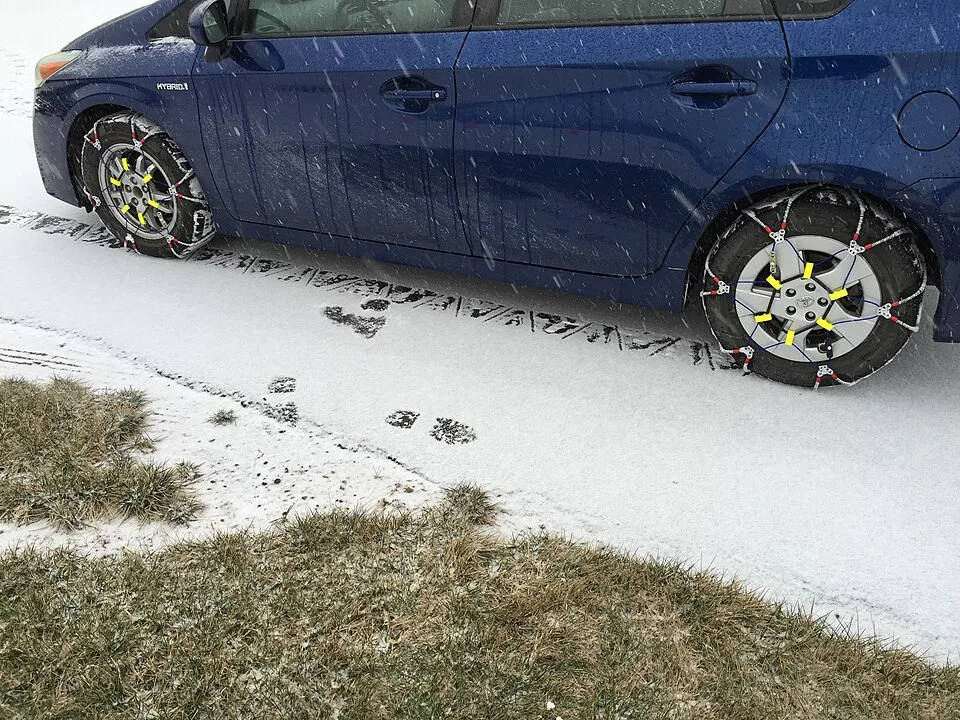

▲ 노면 온도가 떨어지면 타이어 종류에 따라 제동거리가 크게 벌어진다 ⓒ Wikimedia Commons
"사계절타이어면 눈 좀 와도 버티지 않을까." 많은 운전자가 이렇게 생각한다. 하지만 이 판단이 틀리는 지점은 눈이 오느냐 마느냐가 아니라 기온이 몇 도냐에 있다.
사계절타이어의 고무는 영상 7도 부근부터 서서히 굳기 시작해, 기온이 더 떨어질수록 접지력을 빠르게 잃는다. 눈이 오지 않는 맑은 날에도, 새벽 기온이 이 구간에 들어가는 순간부터 사계절타이어는 원래 성능을 내지 못한다.
1. 고무 배합부터 다르다 — 영상 7도가 갈림길
겨울타이어와 사계절타이어는 애초에 같은 재료로 만들어지지 않는다. 겨울타이어는 실리카 함량을 높인 특수 고무 컴파운드를 적용해 낮은 온도에서도 딱딱해지지 않고 유연성과 접지력을 유지하도록 설계된다.
반면 사계절타이어는 사계절 전체에서 두루 쓰이도록 배합된 범용 고무다. 기온이 영상 7도 이하로 떨어지면 고무 자체가 굳어지기 시작하고, 이 상태에서는 노면과의 마찰력이 급격히 줄어든다. 트레드 패턴도 다르다. 겨울타이어는 잘게 갈라진 무수한 홈(사이핑)이 표면 전체에 새겨져 있어, 눈과 얼음을 파고들며 미세한 걸림을 만들어낸다.

▲ 트레드에 촘촘히 새겨진 사이핑 홈이 눈과 얼음을 파고들며 접지력을 만들어낸다 ⓒ Wikimedia Commons
| 구분 | 겨울타이어 | 사계절타이어 |
|---|---|---|
| 고무 배합 | 저온 특화, 영하권에서도 유연성 유지 | 범용 배합, 영상 7도 이하에서 급격히 경화 |
| 트레드 패턴 | 촘촘한 사이핑으로 눈·얼음 파고듦 | 배수 위주 패턴, 사이핑 상대적으로 적음 |
| 적정 사용 시기 | 평균기온 7도 이하 구간 | 평균기온 7도 이상 구간 |
| 눈길 제동거리(40km/h) | 약 18.49m | 약 37.84m |
| 마른 노면 승차감·연비 | 겨울타이어 대비 다소 불리 | 상대적으로 유리 |
📍 '눈이 안 와도' 성능 차이는 이미 시작된다
겨울타이어와 사계절타이어의 성능 차이는 눈이 내리는지 여부와 무관하게 기온만으로도 갈린다. 맑고 건조한 도로라도 노면 온도가 영상 7도 밑으로 떨어지면 사계절타이어의 제동력과 코너링 접지력은 이미 저하되기 시작한다. "눈이 안 오니까 괜찮다"는 판단은 절반만 맞는 이야기다.
2. 겨울타이어, 정확히 언제 바꿔야 하나
교체 기준은 명확하다. 평균기온이 영상 7도 이하로 떨어지기 시작하는 시점이다. 국내 타이어 제조사와 유통업계 모두 이 기준을 안내하고 있다.
✅ 지역별·계절별 교체 시점 가늠하기
· 서울·경기 기준 — 11월 평년 기온이 영상 7~8.2도 수준이므로, 11월 중순 이전이 겨울타이어 장착 적기
· 강원 산간·영동, 충청 이북 등 상대적으로 추운 지역은 이보다 앞당겨 10월 말~11월 초 점검 권장
· 봄철 교체(탈착) 시점은 기온이 다시 안정적으로 영상 7도 이상을 유지하는 3월 중순 이후가 일반적
· 특정 날짜보다 일교차가 큰 환절기 아침 최저기온을 기준으로 판단하는 것이 더 정확함
겨울용 타이어 교체 시기와 관리 요령은 아래 기사에서 더 자세히 확인할 수 있다. 겨울용 타이어 교체 적기 기사 바로가기
📍 효과를 제대로 보려면 — 4가지 체크포인트
· 트레드 홈 깊이 확인 — 보관해뒀던 겨울타이어라도 홈 깊이가 신품 대비 50% 이하면 성능이 급격히 떨어지므로 교체 검토
· 사륜구동도 예외 아님 — 구동력이 좋아도 제동·코너링 접지력은 타이어 성능에 좌우되므로 동일하게 겨울타이어 필요
· 공기압 재점검 — 기온이 낮아지면 공기압이 4~5% 이상 자연 감소하므로 월 1회 이상 점검
· 4개 모두 교체 — 앞바퀴만 바꾸면 오버스티어, 뒷바퀴만 바꾸면 언더스티어 위험이 커짐
3. 사계절타이어, 실제로 얼마나 위험한가
수치로 보면 체감보다 훨씬 크다. 한 제조사의 테스트 결과에 따르면 눈길에서 시속 40km로 달리다 급제동했을 때, 겨울타이어의 제동거리는 18.49m인 반면 사계절타이어는 37.84m로 두 배 이상 길었다. 빙판길 시속 20km 조건에서도 겨울타이어가 사계절타이어 대비 약 14% 짧은 제동거리를 기록했다.

▲ 스터드(스파이크) 타이어처럼 극한 조건에 특화된 겨울용 타이어도 있다 ⓒ Wikimedia Commons
왜 이렇게 차이가 날까. 앞서 살펴본 고무 배합과 트레드 패턴 차이가 겹쳐서 작용한다. 사계절타이어는 저온에서 고무가 굳어 노면과의 마찰계수 자체가 떨어지고, 사이핑이 상대적으로 적어 눈·얼음을 파고드는 힘도 약하다. 제동거리가 늘어나는 것은 곧 사고 회피 거리가 줄어드는 것을 의미한다는 점에서, 이 차이는 단순한 '승차감' 문제가 아니라 안전과 직결된 문제다.
✅ 사계절타이어를 겨울에도 계속 쓰고 있다면
· 출퇴근길이 급경사·고가도로·교량 등 결빙 취약 구간을 지난다면 위험도가 더 커짐
· 아침 최저기온이 영상 7도 이하로 떨어지는 날이 많아지면 이미 성능 저하 구간에 진입한 것
· 눈이 오지 않아도 새벽·야간 노면 결빙(블랙아이스) 구간에서는 사계절타이어의 취약함이 그대로 드러남
· 매년 겨울타이어를 새로 사기 부담스럽다면, 최소한 주행 빈도가 높은 차량 한 대만이라도 우선 교체하는 방법 고려
4. 겨울타이어가 있어도 스노우체인이 필요한 경우
겨울타이어를 장착했다고 스노우체인이 완전히 필요 없어지는 것은 아니다. 겨울타이어는 일반적인 적설·결빙 상황에서 충분한 접지력을 제공하지만, 다음과 같은 조건에서는 체인이 추가로 요구될 수 있다.

▲ 급경사나 통제구간에서는 겨울타이어를 장착했더라도 스노우체인이 추가로 필요할 수 있다 ⓒ Wikimedia Commons
✅ 스노우체인이 별도로 필요한 상황
· 급경사 구간 — 산간도로, 고갯길 등 경사가 큰 구간에서는 겨울타이어만으로 등판·제동이 부족할 수 있음
· 폭설로 통제되는 구간 — 일부 고속도로·국도는 폭설 시 체인 미착용 차량 진입을 자체 통제하기도 함
· 제설이 늦은 지방도·산간 마을 진입로 — 도심과 달리 제설 우선순위가 낮아 적설이 오래 남는 구간
· 사계절타이어 차량이라면 폭설 예보 시 체인은 사실상 필수품에 가까움
📍 한국 도로 여건상 체인 사용 빈도는 낮은 편
한국은 도로 포장률이 높고 제설 대응이 빠른 편이어서, 실제로 체인을 장착해야 하는 상황 자체가 자주 발생하지는 않는다. 다만 강원 산간, 지리산·태백산 인근 고갯길 등 특정 구간을 정기적으로 오간다면 트렁크에 체인을 상시 비치해두는 것이 안전하다. 최근에는 장착이 간편한 스프레이형·직물형 체인도 대안으로 쓰인다.
5. 비시즌 겨울타이어, 어떻게 보관해야 하나
겨울이 끝난 뒤 타이어를 아무렇게나 쌓아두면 다음 겨울 성능이 눈에 띄게 떨어진다. 고무는 자외선과 열, 습기에 노출되면 경화·균열이 진행되기 때문에 보관 방식이 곧 타이어 수명을 좌우한다.
✅ 겨울타이어 보관 5단계
· 1단계 — 세척과 건조: 탈거한 타이어를 물로 깨끗이 씻어 그루브 안의 이물질을 제거하고 완전히 말릴 것
· 2단계 — 위치 표시: 다음 시즌 위치 교환(전후 로테이션)을 위해 장착 위치를 미리 표시
· 3단계 — 포장: 비닐이나 방수포로 감싸 수분을 차단하고, 검은 봉투 등으로 한 번 더 감싸 자외선 노출 최소화
· 4단계 — 보관 자세: 휠이 장착된 상태면 눕혀서, 휠이 분리된 상태면 세워서 보관 — 가로로 오래 두면 옆면이 눌려 손상될 수 있음
· 5단계 — 보관 장소: 직사광선을 피해 서늘하고 건조한 실내에 두고, 연료·오일 등 화학제품 근처는 피할 것
📍 보관 상태가 다음 겨울 안전을 좌우한다
보관이 잘못된 겨울타이어는 트레드 홈이 멀쩡해 보여도 고무 자체가 딱딱해져 저온 접지력이 떨어진 상태일 수 있다. 매년 장착 전 트레드 마모 상태뿐 아니라 고무 표면에 균열이나 경화 흔적이 없는지도 함께 확인하는 것이 좋다.
6. 요약
겨울타이어와 사계절타이어는 고무 배합부터 다르게 설계된 별개의 제품이다. 사계절타이어는 평균기온이 영상 7도 이하로 떨어지기 시작하면 고무가 굳어 성능 저하가 시작되고, 기온이 더 낮아질수록 접지력은 더 빠르게 떨어진다. 눈길 제동거리에서 겨울타이어와 두 배 이상 차이가 나는 것도 이 때문이다.
서울·경기 기준으로는 11월 중순 이전 교체, 3월 중순 이후 탈착이 일반적인 기준이다. 겨울타이어를 장착했더라도 급경사나 폭설 통제구간에서는 스노우체인이 추가로 필요할 수 있으므로 겨울철 장거리 이동 전에는 체인 비치 여부도 함께 점검하는 것이 좋다.
비시즌 보관은 세척·건조 후 직사광선을 피해 서늘한 곳에 세워서 보관하는 것이 원칙이다. 보관 상태가 부실하면 트레드가 멀쩡해도 고무 자체가 경화돼 다음 겨울 성능에 영향을 줄 수 있다는 점을 기억해두자.